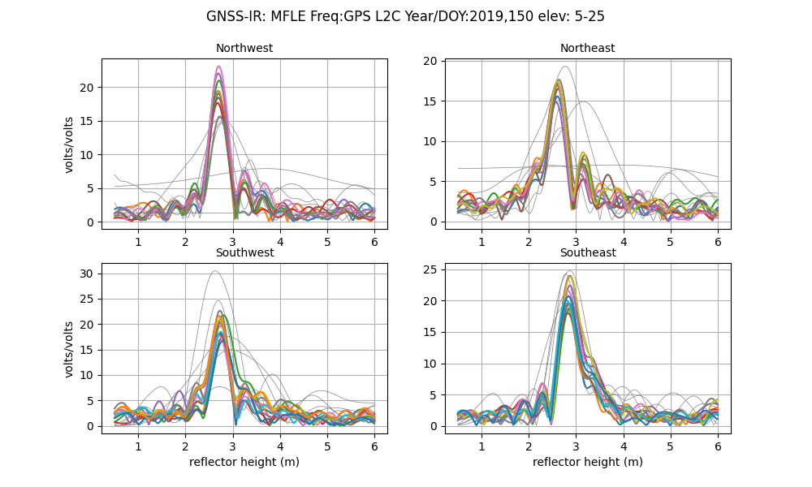
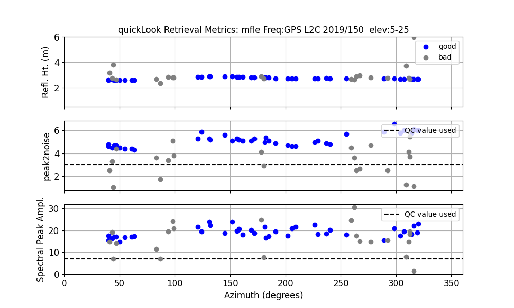

Marshall, Colorado, USA

Station Name: mfle
Location: Boulder, CO, USA
Archive: UNAVCO
Ellipsoidal Coordinates:
Latitude: 39.949
Longitude: -105.194
Height: 1728 m
MFLE was installed by the GPS reflections group in 2011. Our primary interest was validating and improving algorithms to estimate soil moisture from GPS reflections. It has always tracked L2C and those data are freely available from the standard UNAVCO products. It also tracked at 1 sample per second, but it is not necessary to use these higher rate data for a site that is relatively close to the surface.
Unlike the typical drill braced monuments installed for PBO, this site is a bit taller, 2.8 meters above the ground. The receiver at the site was removed in early 2020. Though earlier data are available, here we will only look at the data from 2016-2019. The latter period had far more L2C transmitting satellites than there were in 2011-2015.
Because our interest is soil moisture, we will only use GPS L2C signals.
Take a Quick Look at the Data
First make a SNR file. You don’t need to specify the archive, but it never hurts ;-)
rinex2snr mfle 2019 150 -archive unavco
Then ask explicitly for the L2C data :
quickLook mfle 2019 150 -fr 20
First the periodograms:
{kind=link}
You can see that the peak of the periodograms line up near to 3 meters. The summary plot shows that really all of the geographic regions are good. The rejected tracks (in gray) are primarily due to the satellite not rising high enough in the sky to convince the software that the result should be kept:
{kind=link}
Estimate Reflector Heights
Your first task is to set an analysis strategy using make_json_input.
Let’s use the defaults, but ask for only the L2C data since this is for soil moisture.
If your site is known to our database, you can enter 0 0 0 for the expected latitude, longitude, and height.
make_json_input mfle 0 0 0 -l2c T
Then you need to make more SNR files:
rinex2snr mfle 2016 1 -year_end 2019 -doy_end 366 -archive unavco
This should go pretty fast because the UNAVCO data files for this site are at 30 sec sampling. However, please feel free to only look at one year of data if you have issues with telemetry.
Then you need to estimate reflector heights:
gnssir mfle 2016 1 -year_end 2019 -doy_end 366
Before we look at soil moisture, let’s get an idea of how often it snowed at this site:
daily_avg mfle 0.2 10
You can see that requiring 10 tracks could be increased:


The large variations of the daily averages from the median value is showing snow effects. (The difference beteween the daily RH value and the long-term median value is snow depth). The soil moisture code does a pretty good job of removing snow effects because the effects don’t fit the models, but we also have an explicit snow filter option that we will test out here.
Soil Moisture
First, set up the analysis strategy for mfle. This command selects the satellite tracks you want to use going forward:
vwc_input mfle 2019
It creates a file - its location is printed to the screen.
Then you want to compute the daily phase for our time period:
phase mfle 2016 1 -year_end 2019 -doy_end 366
And then finally:
vwc mfle 2016 -year_end 2019
These are the daily averages for phase:
At a minimum there does appear to be at least one point (circled in red) I do not believe.
Now let’s invoke the snow filter:
vwc mfle 2016 -year_end 2019 -snow_filter T
First, the snow filter definitely has removed that first suspect point in early 2016. However, there are still two regions that may be showing snow effects (circled in red). From the geographic phase plots you can see quite a bit of scatter at the end of 2019 in the southeast quadrant; that is likely reponsible for at least the last outliers. However, overall, the code has done a good job of removing suspect points.
The final volumetric water content results:

These soil moisture estimates are written to a file; its location is written to the screen.
Thank you to Naoya Kadota for test driving this use case.
Kristine M. Larson September 6, 2022